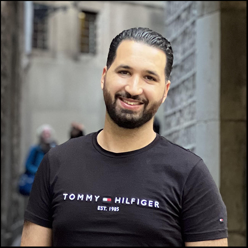
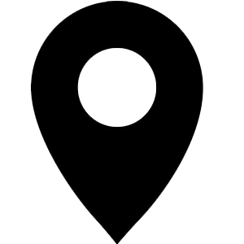

INFORMATIONS PERSONNELLES
Date de naissance
01/09/1991
Nationalité
Tunisienne
Etat civil
Marié
LANGUES
Français
Langue courante
Anglais
Niveau Professionnel
Arabe
Langue maternelle
Permis de conduire
Permis A,B
CENTRES D'INTERETS
Sport
Voyages
Mohammed Yassine
Dabboussi
Développeur Informatique
 28 rue désirée clary 13002 Marseille
06 23 83 27 17
mohammed-yassine.dabboussi@laplateforme.io
Expériences professionnelles
Juillet 2022 – Aout 2022 : Agent de saisie et coordinateur à Consulat général de Tunisie| Marseille, France
- Gestion du référendum constitutionnel tunisien de 2022
- Traitement de la base des données des employés
- Gestion de la salle d’opération
- Formateur des responsables des bureaux de vote
Décembre 2019 – Juin 2022 : travailleur libre | Marseille, France
- Chauffeur livreur chez les sociétés Cogepart et Star Services
- Gestionnaire de résidence : Loc Habitat Marseille (gestion des réservations, inspection, gestion des logements)
- Livreur chez les restaurants : Nikki Sushi et Moshi Moshi
Septembre 2017 – présent : Auto-entrepreneur | Marseille, France
- Gestion d’entreprise évènementiel en Tunisie
- Gestion des employés
- Gestion de projet (budget, planning...)
- Gestion des clientèles
Février 2015 – Mai 2015 : Stagiaire à Cynapsys IT Hotspot | Ariana, Tunisie
- -Développement d’un site web
Mars 2014 – Mai 2014 : Stagiaire à TTA (Agence de voyage) | Tunis, Tunisie
Juin 2012 - Aout 2012 : Stagiaire à Medianet |Ariana, Tunisie
- -Développement d’un site web
Formations
2022 – Présent : La Plateforme | Marseille, France
2022 – 2022 : Simplon | Marseille, France
- Extended Apple foundation program
2016 – 2017 : Université d’Aix Marseille | Marseille, France
- Master 1 Image et Systèmes (Diplôme non obtenu)
2012 - 2015 : Institut privé des hautes études | Tunis, Tunisie
- -Licence fondamentale en Informatique et multimédia
2009 - 2012 : Institut supérieur de gestion | Tunis, Tunisie
- Licence fondamentale en Informatique de gestion
Baccalauréat:
- Sciences de l’Informatique
Compétences
Développement Web :
- HTML, CSS, JavaScript, PHP, Python
Développement backend :
Développement Mobile :
Base de données :
Systèmes d’exploitation :
- Unix, Linux, Windows, Mac OS
Bureautique :
Management :
- Gestion d’entreprise, Planning, gestion des ressources